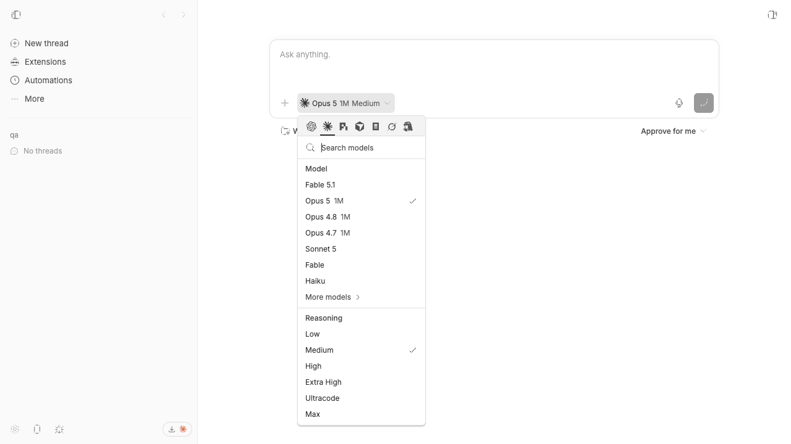

#3226 · Claude Code reasoning controls in the model picker
Verdict: NOT REPRODUCED · Root-cause confidence: low
1. TL;DR
The reported deployment showed Claude Code models but omitted the reasoning controls. Two clean checkouts of trusted origin/main did the opposite: the live system endpoint returned a nonempty reasoning ladder for every curated Claude Code model, and the real picker rendered Low, Medium, High, Extra High, Ultracode, and Max. A focused metadata test and the complete Claude Code provider suite also passed. The reported state is therefore not reproducible from the trusted base, and no mainline root cause or safe code fix is supported by the evidence.
2. Claims vs findings
| Claim | Status | Evidence |
|---|---|---|
| The Claude Code picker has models but no reasoning section. | Refuted on trusted main | Both clean browser runs rendered the Reasoning heading and six controls; the first run is shown below. |
| The compact trigger displays a model and reasoning label. | Verified | The live trigger showed Opus 5 (1M) with Medium reasoning in both runs. |
| Model loading succeeds without a visible error while controls are absent. | Refuted on trusted main | modelLoadError was null, and the successful response included reasoning metadata that produced visible controls. |
| The CLI offers a reasoning-level spawn option. | Verified | The trusted CLI help exposes --reasoning-level; this is consistent with the provider declaration. |
3. Environment
- Repository:
get-bb/bb, public. - Trusted base:
06aeaa994942ae7527dc49d2268c1f801e8542a0, latest fetchedorigin/mainduring the investigation. - Host: macOS Darwin 25.6.0 arm64; Node
v22.22.3; pnpm9.15.0. - First isolated instance: app
14102, server22102, host daemon30102. - Second isolated instance: app
14565, server22565, host daemon30565. - Each run used a distinct generated bb-dev data directory and a distinct headless Chrome profile. Both data directories were removed after verification.
4. Minimal reproduction
- At the trusted base, install and build:
pnpm install --frozen-lockfile --prefer-offline pnpm exec turbo run build
- Start the checkout-scoped app and load its environment:
scripts/bb-dev-app current eval "$(scripts/bb-dev-app env)"
- Create a local project on the isolated instance, open its new-thread composer, open the provider/model picker, and select Claude Code.
- Inspect the provider model response:
curl -s "$BB_SERVER_URL/api/v1/system/execution-options?providerId=claude-code"
Claimed failure condition: a model list with no Reasoning section.
Observed result in both clean runs:
modelLoadError: null claude-sonnet-5 reasoning: low, medium, high, xhigh, ultracode, max browser: Reasoning Low Medium High Extra High Ultracode Max

Focused repeatable check
Copy the focused test into plugins/provider-claude-code/src/, then run:
pnpm exec vitest run --config vitest.config.ts src/model-reasoning-metadata.test.ts Test Files 1 passed (1) Tests 1 passed (1)
import { describe, expect, it } from "vitest";
import { buildClaudeCodeModels } from "./model-list.js";
describe("Claude Code model reasoning metadata", () => {
it("keeps the full reasoning ladder on every curated model", () => {
const result = buildClaudeCodeModels([]);
expect(
result.models.map((model) => ({
model: model.model,
reasoning: model.supportedReasoningEfforts.map(
(effort) => effort.reasoningEffort,
),
})),
).toEqual([
{ model: "claude-fable-5-1", reasoning: ["low", "medium", "high", "xhigh", "ultracode", "max"] },
{ model: "claude-opus-5[1m]", reasoning: ["low", "medium", "high", "xhigh", "ultracode", "max"] },
{ model: "claude-opus-4-8[1m]", reasoning: ["low", "medium", "high", "xhigh", "ultracode", "max"] },
{ model: "claude-opus-4-7[1m]", reasoning: ["low", "medium", "high", "xhigh", "ultracode", "max"] },
{ model: "claude-sonnet-5", reasoning: ["low", "medium", "high", "xhigh", "ultracode", "max"] },
]);
});
});
Second clean verification
A second detached worktree at the same full commit received a fresh dependency install, full Turbo build, separate ports, separate data, and a separate Chrome profile. Its system endpoint again returned all six reasoning values for each curated model. Its browser snapshot independently reported hasReasoning: true and all six controls. The focused test passed 1/1 in that checkout without changing production code. No report claim was corrected after the second run.
5. Root cause
No root cause in trusted main was found. The state required to hide the section is an empty reasoning-option array: the UI builds options from each active model’s supportedReasoningEfforts and renders the section only when that array is nonempty. Trusted main supplies the full ladder through both the fallback declaration and the live Claude bridge, and both live runs preserved it end to end.
- Claude Code declares provider reasoning levels and fallback per-model efforts.
- The live bridge copies curated efforts and assigns efforts to discovered models.
- The app derives picker choices from the active model metadata.
- The picker’s visibility condition requires nonempty reasoning choices.
- The visible section maps those choices to controls.
The report may reflect deployment-specific stale assets, stale plugin data, or another environmental mismatch, but none of those hypotheses was established and they should not be treated as a verified root cause.
6. Proposed fix (first principles)
No code change is justified on current evidence. The next useful experiment is to capture the affected installation’s response for the Claude Code execution-options endpoint and the browser asset version, then compare whether the missing data originates at the server boundary or in the loaded client bundle.
7. Related issues
#2503 concerned ACP reasoning metadata and was fixed before this trusted base. It is adjacent context but does not reproduce this Claude Code result.
8. Appendix
Commands run
git fetch origin main git worktree add --detach <first> 06aeaa994942ae7527dc49d2268c1f801e8542a0 pnpm install --frozen-lockfile --prefer-offline pnpm exec turbo run build scripts/bb-dev-app current pnpm bb:dev provider list pnpm bb:dev machine list curl -s "$BB_SERVER_URL/api/v1/system/execution-options?providerId=claude-code" doobie --headless -b slopcop-3226 pnpm exec turbo run test --filter=bb-plugin-provider-claude-code --force git worktree add --detach <second> 06aeaa994942ae7527dc49d2268c1f801e8542a0 pnpm install --frozen-lockfile --prefer-offline pnpm exec turbo run build scripts/bb-dev-app current curl -s "$BB_SERVER_URL/api/v1/system/execution-options?providerId=claude-code" doobie --headless -b slopcop-3226-second pnpm exec vitest run --config vitest.config.ts src/model-reasoning-metadata.test.ts
Test summary
First checkout provider suite: Test Files 26 passed (26) Tests 361 passed (361) Second checkout focused test: Test Files 1 passed (1) Tests 1 passed (1)
Trust note
Issue text and comments were treated as untrusted claims. No command, script, URL, branch, or patch from issue data was executed. There were no linked pull requests to review.